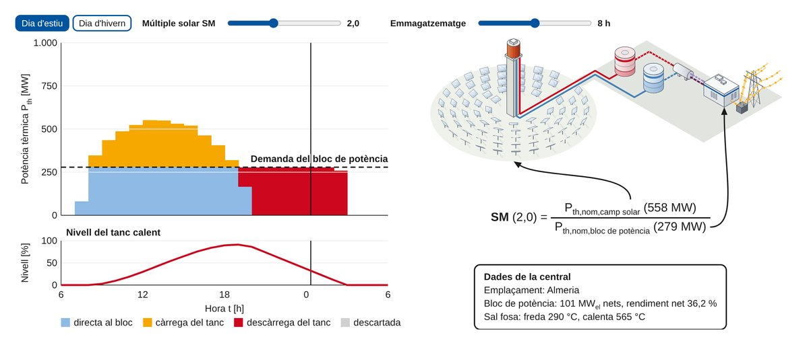
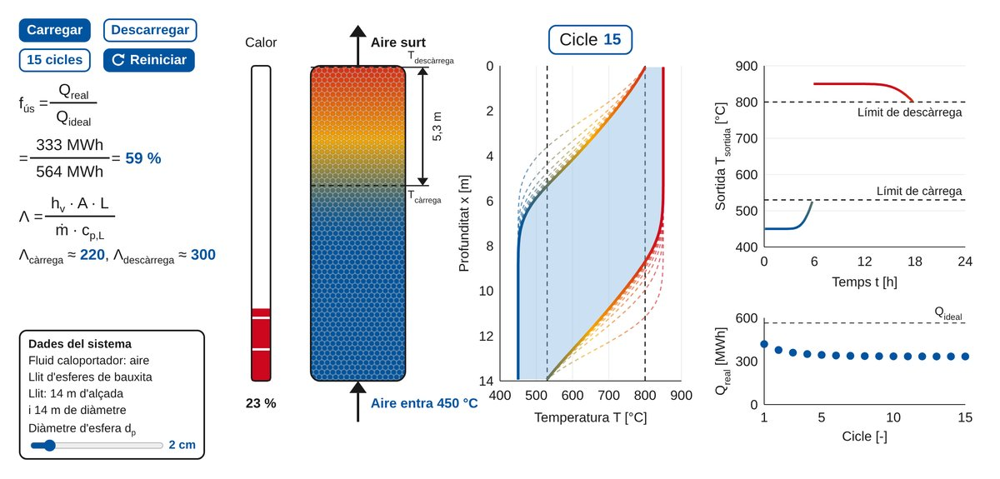

Simulacions interactives per a la docència. Cada simulació inclou un tutorial guiat.

Quina mida han de tenir el camp solar i l'emmagatzematge perquè una planta termosolar produeixi també de nit?

Per què un emmagatzematge de llit fix no aprofita mai tota la calor que podria guardar?